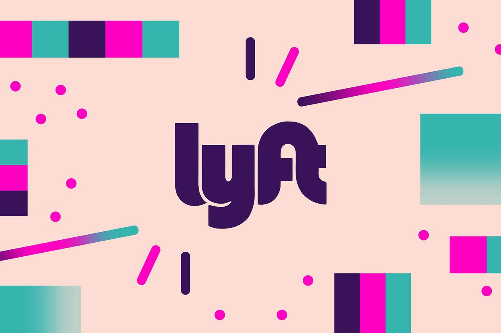

{{define "homeFeed"}}

<!-- Featured stuff on home page -->
<div class="homeFeedCell">
  <h1 class="cellHeader">The Case for Lyft</h1>
  <p class="cellText">
    Hi, my name is Henry, and my team and I took a look at how 
    to make Lyft fit the needs for more people. 
  </p>
  

  <br >
  <h2>A Thing to Note</h2>
  <p>
      From the very start of this case study, the team and I focused on finding appropriate ways to 
      better accommodate the needs for rideshare users. In comparing Uber and Lyft, we immediately 
      observed that Uber had already provided much more resources and rider options, whereas Lyft was 
      clearly lacking those features for their users. This motivated the team to shift our focus on 
      extending features to offer more 
      options for their riders to remain competitive with Uber. Throughout our process, everyone had 
      a chance to do a bit of everything, but I found myself gravitating more towards synthesizing and 
      interpreting the data gathered from our test sessions. Overall, our team was able to come up with a
      feature set that can augment the overall user experience for Lyft’s customers. 
  </p>

  <br /> 

  <h2>Background</h2>

  <br />

  <h2>Research</h2>

  <br />

  <h2>Problem Statement</h2>

  <br />

  <h2>Personas</h2>

  <br />

  <h2>UX / UI Flows</h2>

  <br />

  <h2>Prototyping Process</h2>

  <br />
  <h2>Personal Reflection</h2>
  <p>
    Overall, the team managed to design a new feature set that would create meaningful value to Lyft’s customers. 
    Designing for a problem in this context gave us valuable experience as to how a more established organization 
    can have their products improved even more over time. Throughout the process, the team remained focused on our 
    goals and ensuring that we do not add unnecessary information in the overall user experience flow. It would be
    no suprise to be if Lyft eventually integrated this feature into their product, since they must remain competative 
    with Uber. 

  </p>

</div>
{{end}}